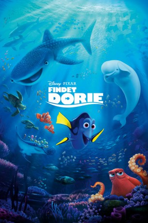

Alternativ: Finding Dory
 
 IMDB-Wertung: 7.5 / 10
IMDB-Wertung: 7.5 / 10  Metascore:
Metascore: 
Ein Jahr ist vergangen, seit Clownfisch-Vater Marli seinen verschollenen Sohn Nemo quer durch den ganzen Ozean gesucht hat und dabei tatkräftig von der vergesslichen Doktorfisch-Dame Dorie unterstützt wurde. Die Aufregungen des Abenteuers liegen mittlerweile lange zurück und die Drei sind wie eine kleine Familie. Doch als Dorie eines Tages eine scheinbar unbedeutende Beobachtung macht, schießt es ihr plötzlich durch den Kopf: Wo sind denn eigentlich ihre Eltern abgeblieben? Kleine Bruchstücke ihrer Vergangenheit kommen auf einmal zurück und lassen sie nicht in Ruhe. Für Dorie ist klar: Dieses Mal muss sie sich auf die Suche begeben. Gemeinsam mit Marlin und Nemo macht sie sich auf eine Reise voller Gefahren, die sie bis ins Meeresbiologische Institut in Kalifornien führt. Doch wird sie dort endlich mit ihrer Familie wiedervereint?
Jahr: 2016
Dauer: 97 Minuten
FSK: 0
Land: USA Studio: Walt Disney Studios Motion PicturesTonspuren: DD5.1 - ,
Untertitel:
Auflösung: 1080p (1920x1080) Größe: 5580 MB
Genre: Komödie, Abenteuer, Animation/Trick, Familie
Regisseur:  Andrew Stanton, Angus MacLane
Andrew Stanton, Angus MacLane
Drehbuch: Lorenzo Carcaterra
Soundtrack:
Darsteller:
Datei: X:\Kinder Disney HD\Findet Nemo\Findet Dorie (2016, FSK0, 1920x1080) 3D.mkv seit 19.01.2017
Festplatte: Kinder-Filme+Trick
 Es gibt insgesamt 7 Filme in der Gruppe 'Kinder Disney HD\Findet Nemo'
Es gibt insgesamt 7 Filme in der Gruppe 'Kinder Disney HD\Findet Nemo'